Overview
The Zebra Scanner JPOS Driver suite ships with a sample application that demonstrates all the JPOS operations on connected Zebra scanner and scale devices.
JPOS Sample Application (JPOS Test Utility)
The JPOS Test Utility allows you to simulate an application communicating with the Zebra Scanner JPOS Driver. This utility displays scanner and scale data received from the devices through the Zebra Scanner SDK. Zebra Scanner SDK includes source code for this Java test utility.
Multi-instance Support through JPOS
Multiple instances of the scanners can be maintained with JPOS driver for Windows/Linux. The instances can be of the same logical name or different logical names. The JPOS commands can be executed on selected scanners based on the configuration set in the JPOS xml. Details on setting the configuration is explained in the table given below. Addition of a new instance is performed by clicking on the 'Add Scanner' button. Currently, support is given to maintain only one instance of Scale through the utility.
Table 1: Specific Scanner selection to initiate Communication in JPOS
| Filtration | Description |
|---|---|
| Logical Name | Considers the host mode of the device. |
| Scanner Model |
This will only apply for the configured logical name in the JPOS XML and the scanners pertaining to the specified model name. <prop name="ScannerModel" value=""/> |
| Serial Number |
This will only apply for the configured logical name in the JPOS XML and the scanners pertaining to the specified serial number. <prop name=" SerialNumber " value=""/> |
For better clarity, an excerpt of the JPOS xml is provided below.
<JposEntry logicalName="ZebraAllScanners">
<creation factoryClass="com.zebra.jpos.service.scanner.SymScannerSvc112Factory" serviceClass="com.zebra.jpos.service.scanner.SymScannerSvc112"/>
<vendor name="Zebra Technologies" url=https://www.zebra.com/>
<jpos category="Scanner" version="1.12"/>
<product description="Zebra Serial/USB Scanner" name="Zebra Scanner" url=https://www.zebra.com/>
<prop name="ScannerType" value="ALL"/>
<prop name="ScannerModel" value=""/>
<prop name="SerialNumber" value=""/>
<prop name="ExclusiveClaimLevel" value="0" />
<prop name="NcrBeepOnceScanTonePattern" type="String" value="10"/>
<prop name="NcrEnableBeepScanTonePattern" type="String" value="10"/>
<prop name="NcrDisableBeepScanTonePattern" type="String" value="10"/>
<prop name="DioScannerNotOnFile" type="String" value="7"/>
<prop name="DioScannerDioNof" type="String" value="7"/>
<prop name="ScanDataLabelId" type="String" value="9999"/>
<prop name="ResetTimeout" type="String" value="30000"/>
</JposEntry>
JPOS Test Utility Scanner Functionality
Table 2: Scanner JPOS Test Utility Button/Field/Checkbox Functionality
| Button / Field / Checkbox | Description | Values | Code Samples |
|---|---|---|---|
| Open | Open Method | Zebra ScannerSNAPI | scanner.open(ZebraScannerSNAPI); |
| Claim | Claim the device with time out value. | -1, Any integer starting from zero | scanner.claim(1000); |
| Device Enable / Disable | Enable or disable the scanner. Must enable before using scanners. | N/A |
Enable: scanner.setDeviceEnabled(true); Disable: scanner.setDeviceEnabled(false); |
| Release | Release the scanner. | N/A | scanner.release(); |
| Close | Close the scanner. | N/A | scanner.close(); |
| Scan Data | |||
| Scan Data Type | Type of the scanned data. This is only a readable property. | N/A | scanner.getScanDataType(); |
| Scan Data Label | Label of the scan data. | N/A | scanner.getScanDataLabel(); |
| Clear Input | Clear method. Clears the input data. | N/A | N/A |
| Properties and Methods | |||
| Auto Disable | Set the Auto disable property. | N/A | scanner.setAutoDisable(false); |
| Data Event Enabled | Set data event enabled. Must enable data event to get data. | N/A | scanner.setDataEventEnabled(true); |
| Freeze Events | Set the Freeze Events property. | N/A | scanner.setFreezeEvents(false); |
| Decode Data | Set decode data enable. | N/A | scanner.setDecodeData(true); |
| Power State | Get the Power State of the scanner. | N/A | scanner.getPowerState(); |
Viewing Bar Code Data
To view bar code data using the Scanner JPOS Test Utility:
- Scan the USB (IBM Hand-held) bar code, SNAPI bar code or Wincor-Nixdorf RS-232 Mode B bar code on Scanner Configuration Bar Codes to configure the scanner for the correct communication protocol.
- Launching the sample application.
- Windows - run C:\Program Files\Zebra Technologies\Barcode Scanners\Scanner SDK\JPOS\Sample Applications\bin\JPOSTest.bat to launch the Scanner JPOS Test Utility.
-
Linux - execute the following commands to launch the JPOS Sample Application in Linux.
cd /usr/share/zebra-scanner/samples/jpos-sample-app ./jpos-sample-app.sh
- Select Open after entering the logical name.
- Select Claim.
- Select Device Enable.
- Select Data Events.
- Select Decode Data.
-
Scan the following sample bar code:
-
The bar code data the driver processed appears in the Scan Data Type and Scan Data Label boxes.
Figure 3: Scanner JPOS Test Window - Scan Data
- Select Clear Input to clear the data from the Scan Data Type and Scan Data Label boxes.
- To perform a second test, scan another bar code.
Return Value
When calling any method, check whether the return value is 0 (=JPOS_SUCCESS) to ensure the method is successful. Otherwise it returns an error code, which indicates the reason for the error.
JPOS Test Utility Scale Functionality
Table 3: Scale JPOS Test Utility Button/Field/Checkbox Functionality
| Button / Field / Checkbox | Description | Values | Code Samples |
|---|---|---|---|
| Open | Open method. | Zebra Scale. | scale.open(ZebraScannerSNAPI); |
| Claim | Claim the device with time out value. | -1, Any integer starting from zero | scale.claim(1000); |
| Device Enable / Disable | Enable or Disable the scanner. Must enable before using scale. | True / False |
Enable: scale.setDeviceEnabled(true); Disable: scale.setDeviceEnabled(false); |
| Read Weight | Measures the weight of items(s) on the scale. | -1, Any integer starting from zero | scale.ReadWeight(&weightData, 1000); |
| Zero Scale | Sets the current scale weight to zero. | N/A | Scale.ZeroScale(); |
| Release | Release the scale. | N/A | scale.release(); |
| Close | Close the scale. | N/A | scale.close(); |
Read Weight Error and Status Codes
Error Codes and Extended Error Codes
JPOS reports scale statuses as JposException Error code and the default values for each states are as follows.
Table 4: Scale Read Weight Error Codes
| Value | Error Code (Default) | Extended Error Code (Default) | Property in jpos.xml |
|---|---|---|---|
| STABLE_WEIGHT_OVER_LIMIT | 114 | 201 | extErrorOverWeight |
| STABLE_WEIGHT_UNDER_ZERO | 114 | 202 | extErrorUnderZero |
| NON_STABLE_WEIGHT | 114 | 203 | extErrorNonStableWeight |
| SCALE_NOT_READY | 114 | 203 | extErrorNonStableWeight |
| STABLE_ZERO_WEIGHT | 114 | 204 | extErrorStableZeroWeight |
Both the Error Code and the Extended Error Code are reported in the same exception. Error Code value is common and the Extended Error Code is unique for each scenario.
The values of the ErrorCode and the Extended Error Codes can be changed from the JPOS.xml by updating the following property values.
<prop name="ErrorCode" type="String" value="114"/>
<prop name="ExtErrorOverWeight" type="String" value="201"/>
<prop name="ExtErrorUnderZero" type="String" value="202"/>
<prop name="ExtErrorNonStableWeight" type="String" value="203"/>
<prop name="ExtErrorStableZeroWeight" type="String" value="204"/>
Status Update Events
If the property StatusNotify is true when the scale is enabled, the following StatusUpdateEvent will be generated. Each event is denoted by the tag given in the tag column.
Table 5: Status Update Events
| Event | Tag |
|---|---|
| SCAL_SUE_WEIGHT_UNSTABLE | US |
| SCAL_SUE_WEIGHT_ZERO | WZ |
| SCAL_SUE_WEIGHT_OVERWEIGHT | OW |
| SCAL_SUE_NOT_READY | NR |
| SCAL_SUE_WEIGHT_UNDER_ZERO | UZ |
Measuring the Weight of an Item
To view the weight of an item using the JPOS Test utility:
- Scan an IBM Hand-held, IBM Table-top, SNAPI, or SSI bar code to configure the device for the correct communication protocol.
- Launching the sample application.
- Windows - run C:\Program Files\Zebra Technologies\Barcode Scanners\Scanner SDK\JPOS\Sample Applications\bin\JPOSTest.bat to launch the Scanner JPOS Test Utility.
-
Linux - execute the following commands to launch the JPOS Sample Application in Linux.
cd /usr/share/zebra-scanner/samples/jpos-sample-app ./jpos-sample-app.sh
- Enter the scale's logical name, and select Open.
- Select Claim.
- Select Device Enable.
- Place an item on the scale platter.
- Select the ReadWeight button. The item's weight appears on the adjoining text box.
- To measure the weight of another item, remove any items on the platter and place the new item on the scale; select the ReadWeight button.
- Select Release to release the claimed device.
- Select Close to close the logical device.
How to Create a Sample Application Using NetBeans and Eclipse
Create a Sample Application Using NetBeans
Pre-requisites
- Java 8 (JDK 1.8.0_202) to Java 21.
- NetBeans IDE which corresponds to the installed Java version. (ex: NetBeans IDE 8.2 for Java 8)
- Latest versions of Zebra Scanner SDK and JPOS for Linux.
- Latest versions of Zebra Scanner SDK and JPOS for Windows.
NOTE: The JPOS driver for Linux or Windows supports Java versions starting from Java 1.6 onwards. Therefore, use a suitable version that fits the overall requirements and compatibility needs. At present it supports up to Java 21.
Setting up the Project
- Make sure the preferred Java version is installed on the system.
- Open NetBeans and click 'File' → 'New Project'.
- Select 'Java with Ant' from 'Categories'.
-
Select 'Java Application' from 'Projects' and click 'Next'.
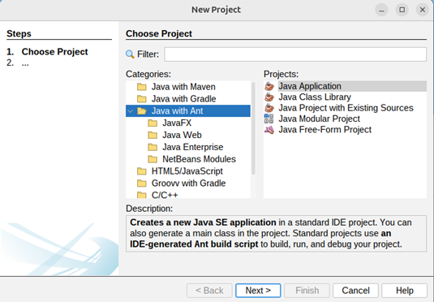Figure 6: Create a New Project
-
Enter ‘Project Name’ and ‘Project Location’ (If required, click ‘Create Main Class’) and click ‘Finish’.
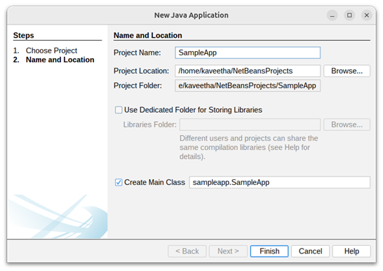Figure 7: Select the Application Type
-
Right click on the created project in the ‘Projects’ pallet and select ‘Properties’.
 Figure 8: Project Properties
Figure 8: Project Properties
- Select ‘Libraries’ from ‘Categories’ and navigate to the ‘Compile’ tab.
- Select ‘Classpath’ in ‘Compile-time Libraries’.
-
Click ‘+’ button and select ‘Add JAR/Folder’.
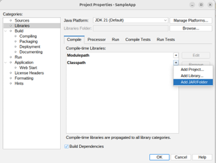Figure 9: Project Dependencies
NOTE: Make sure to select the correct Java Platform.
-
Navigate to the location where JPOS binaries are located.
- Linux- ‘/usr/share/zebra-scanner/javapos/’
- Windows- ‘C:\Program Files\Zebra Technologies\Barcode Scanners\Scanner SDK\JPOS’
-
Add the JAR files listed below from the specified locations in Table 1 at the Appendix section.
- JposLogger.jar
- JposServiceJniScale.jar
- JposServiceJniScanner.jar
- JposServiceOnScale.jar
- JposServiceOnScanner.jar
- JposServiceScale.jar
- JposServiceScanner.jar
- javaPOS114.jar
- xercesImpl.jar
- xml-apis.jar
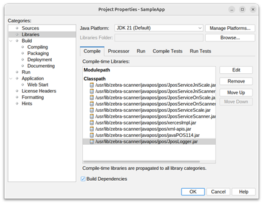Figure 10: Project Dependencies Added
- Then click ‘Run’ option from ‘Categories palette.
- If the ‘Main Class’ is not selected, then browse and select ‘Main class’ of the project.
-
Make sure to add’ DJava’ path inside the ‘VM Options’ box to specify the path to native libraries.
For Linux:
-Djava.library.path="/usr/lib/zebra-scanner/javapos/jni " -Djava.library.path="/usr/lib/zebra-scanner/javapos/jni:/usr/lib/jni "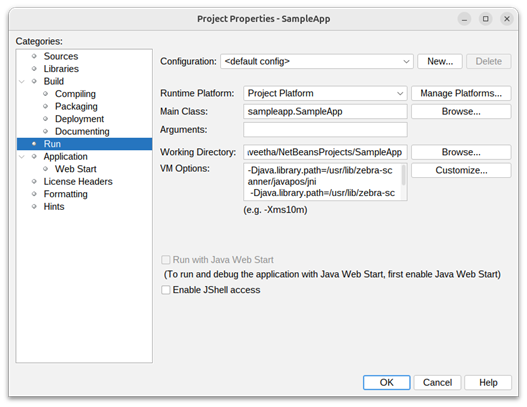Figure 11: Project Properties on Linux
For Windows:
-Djava.library.path="C:\Program Files\Zebra Technologies\Barcode Scanners\Scanner SDK\JPOS\bin"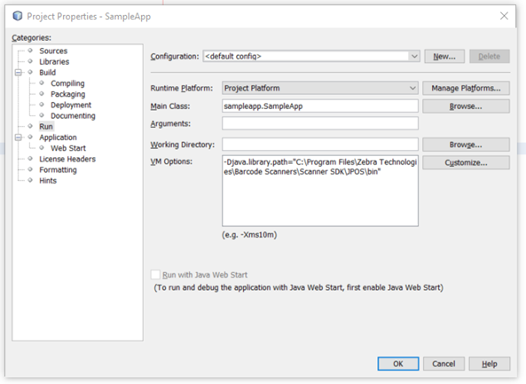Figure 12: Project Properties on Windows
- Click ‘OK’ button.
-
Select ‘Source Packages’ in the ‘Projects’ pallet and paste below files under the ‘Source Packages’ from the given location.
For Linux
- jpos_trace.properties (/usr/share/zebra-scanner/javapos/config)
- jpos.xml (/usr/share/zebra-scanner/javapos/xml)
For Windows
- jpos_trace.properties (C:\Program Files\Zebra Technologies\Barcode Scanners\Scanner SDK\JPOS\bin\jpos_trace.properties)
- jpos.xml (C:\Program Files\Zebra Technologies\Barcode Scanners\Scanner SDK\JPOS\Sample Applications\bin\jpos.xml)
-
Click on the ‘Run Project’ button and run the application.
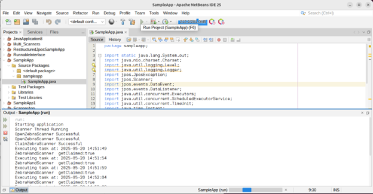Figure 13: Project Execution
Create a Sample Application Using Eclipse
Pre-requisites
- Java 8 (JDK 1.8.0_202) to Java 21.
- Eclipse IDE which corresponds to the installed Java version . (ex: Eclipse 2024-12 (4.34))
- Latest versions of Zebra Scanner SDK and JPOS for Linux.
- Latest versions of Zebra Scanner SDK and JPOS for Windows.
NOTE: The JPOS driver for Linux or Windows supports Java versions starting from Java 1.6 onwards. Therefore, use a suitable version that fits the overall requirements and compatibility needs. At present it supports up to Java 21.
Setting up the Project
- Make sure the preferred Java version is installed on the system.
- Open Eclipse and click ‘File’ -> ‘New’ -> ‘Java Project’.
-
Enter ‘Project Name’ and ‘Project Location’ (or the default location).
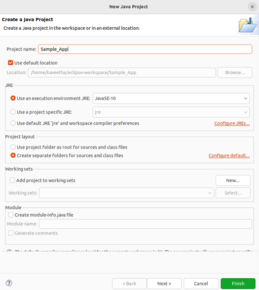Figure 14: Create a new Project in Eclipse
NOTE: Make sure to select the correct Java Platform in ‘Use and execution environment JRE’.
- Click 'Finish'.
-
Right click on the created project in the ‘Projects Explorer’ and select ‘Properties’.
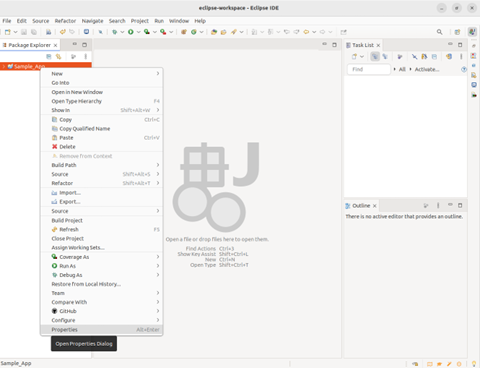Figure 15: Project Properties
- Select ‘Libraries’ tab from ‘Java Build Path’,
-
Select ‘Classpath’ and click ‘Add External JARs’ button.
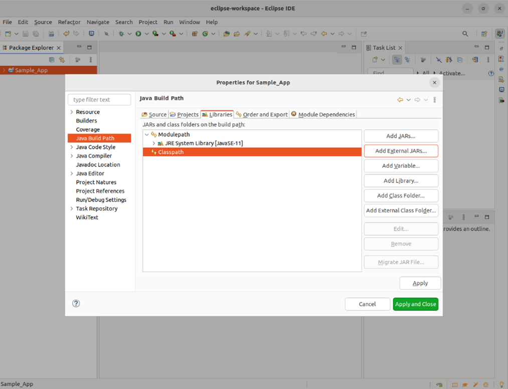Figure 16: Project Dependencies
-
Navigate to the location where JPOS binaries are located.
- Linux- ‘/usr/share/zebra-scanner/javapos/’
- Windows- ‘C:\Program Files\Zebra Technologies\Barcode Scanners\Scanner SDK\JPOS’
-
Add each of the JAR files below from the specific location.
- JposLogger.jar
- JposServiceJniScale.jar
- JposServiceJniScanner.jar
- JposServiceOnScale.jar
- JposServiceOnScanner.jar
- JposServiceScale.jar
- JposServiceScanner.jar
- javaPOS114.jar
- xercesImpl.jar
- xml-apis.jar
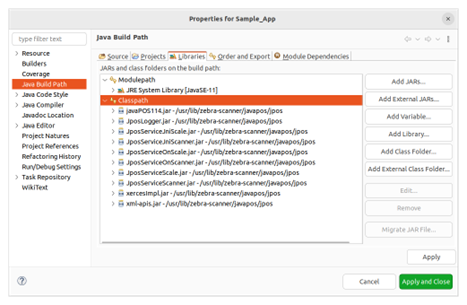Figure 17: Project Properties
- Click ‘Apply and Close’.
- Right click on the project from ‘Project Explorer’ palette.
-
Navigate to ‘Run As’ and select ‘Run Configuration’ from the drop-down list.
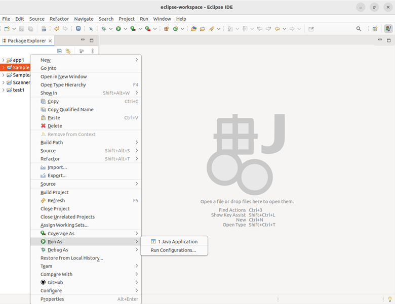Figure 18: Project Workspace
- Double click on ‘Java Application’ to create a new configuration.
-
Select ‘Main’ tab and browse for the project.
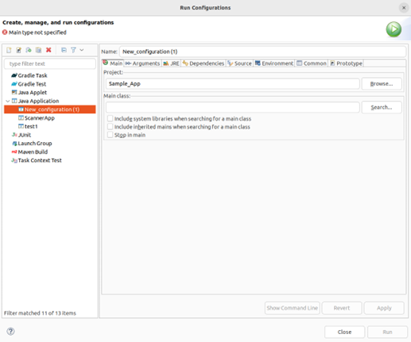Figure 19: Project Workspace
-
If ‘Main class’ is not selected, browse and select main class of the project.
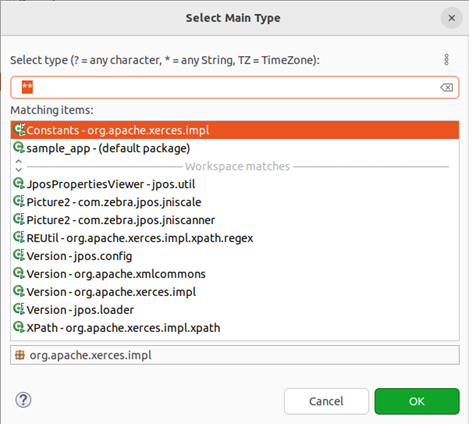Figure 20: Project Type Selection
-
Tick the check boxes as shown in the figure below if required.
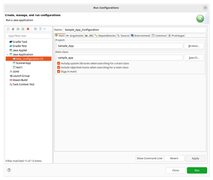Figure 21: Project Configuration Execution
-
Select ‘Arguments’ tab and inside the VM arguments box, add ‘DJava’ path to specify the path to native libraries.
For Linux:
-Djava.library.path="/usr/lib/zebra-scanner/javapos/jni " -Djava.library.path="/usr/lib/zebra-scanner/javapos/jni:/usr/lib/jni "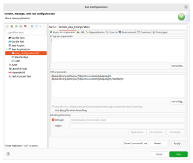Figure 22: Project Configuration on Linux
For Windows:
-Djava.library.path="C:\Program Files\Zebra Technologies\Barcode Scanners\Scanner SDK\JPOS\bin"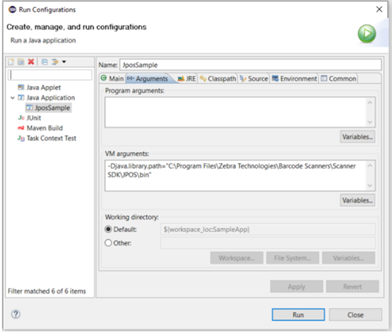Figure 23: Project Configuration on Windows
- Apply the changes and close the window.
- Select ‘Src’ of the project from the ‘Package Explorer’.
-
Locate the following configuration files from the given locations and copy and paste the files under the Source Packages.
For Linux:
- jpos_trace.properties (/usr/share/zebra-scanner/javapos/config)
- jpos.xml (/usr/share/zebra-scanner/javapos/xml)
For windows:
- jpos_trace.properties (C:\Program Files\Zebra Technologies\Barcode Scanners\Scanner SDK\JPOS\bin\jpos_trace.properties)
- jpos.xml (C:\Program Files\Zebra Technologies\Barcode Scanners\Scanner SDK\JPOS\Sample Applications\bin\jpos.xml)
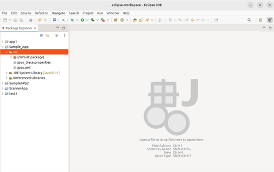Figure 24: Source Packages
-
Click on the ‘Run’ button and run the application.
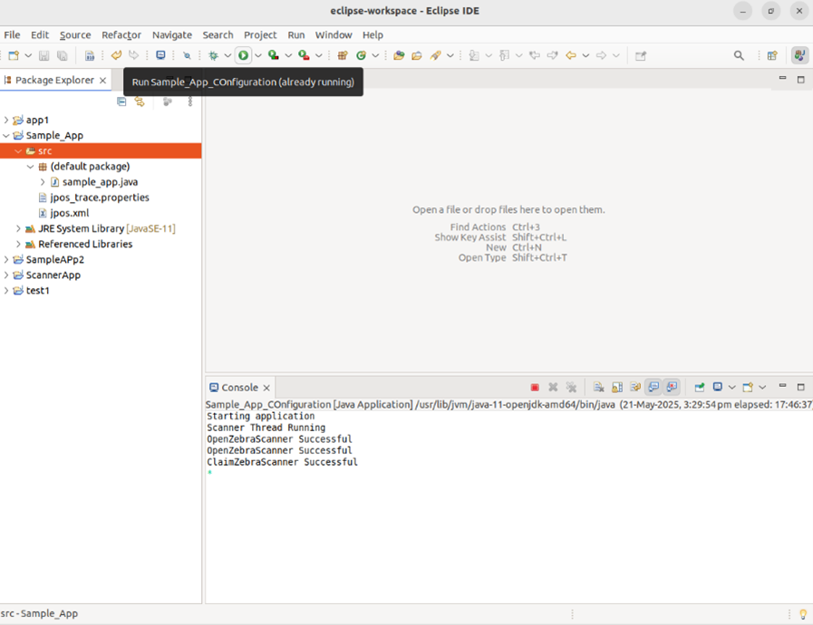Figure 25: Sample Application Execution